Год Белой Металлической Крысы, несмотря на то, что он будет високосным, сулит удачные изменения для каждого
знака
Зодиака.
Больше всего повезет Овнам, Водолеям и Рыбам, но и у остальных произойдут судьбоносные встречи и
везение во
всех сферах жизнедеятельности.
Предлагаем гороскоп на 2020 год по знакам Зодиака.
Овен (21 марта - 20 апреля)
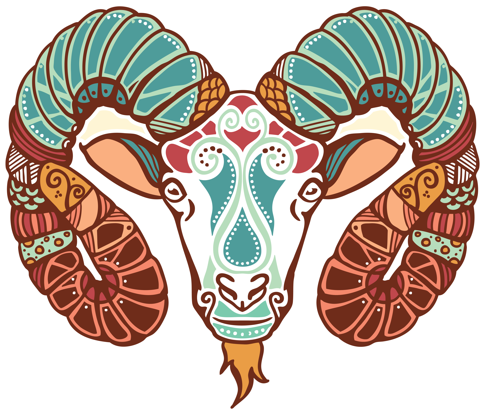
Упрямые и вспыльчивые Овны в новом году осознают важность компромиссов и выдержки. Представителям этого
огненного
знака как никогда нужно научиться смирять свои эмоции и гасить искры на этапе возгорания. Год Крысы - испытание
на
прочность. Если сумеете найти баланс между работой, семьей, отдыхом, сможете держать язык за зубами и
убережетесь от
скоропостижных выводов - все рычаги управления перейдут вам в руки. Лучшее время для работы - с января по июль.
В
этот период для вас горит зеленый свет и все двери открыты. Для смены работы подходит февраль и март. Если не
проморгаете этот период - все сложится благоприятно. К осени и зиме придется активно потрудиться, чтобы
перезимовать
сыто и спокойно. Путешествовать рекомендуется также в феврале. Возможно, для приверженцев экотуризма подойдут
Карпаты, а для любителей моря и солнца - Египет. В июне можно отправляться в поход. Совет года: выплескивайте
всю
свою энергию через спорт и увлечения. Заниматься любимым делом может быть не только интересно, но и прибыльно. К
тому же, не придется подстраиваться под чьи-то ожидания.
Телец (21 апреля - 20 мая)
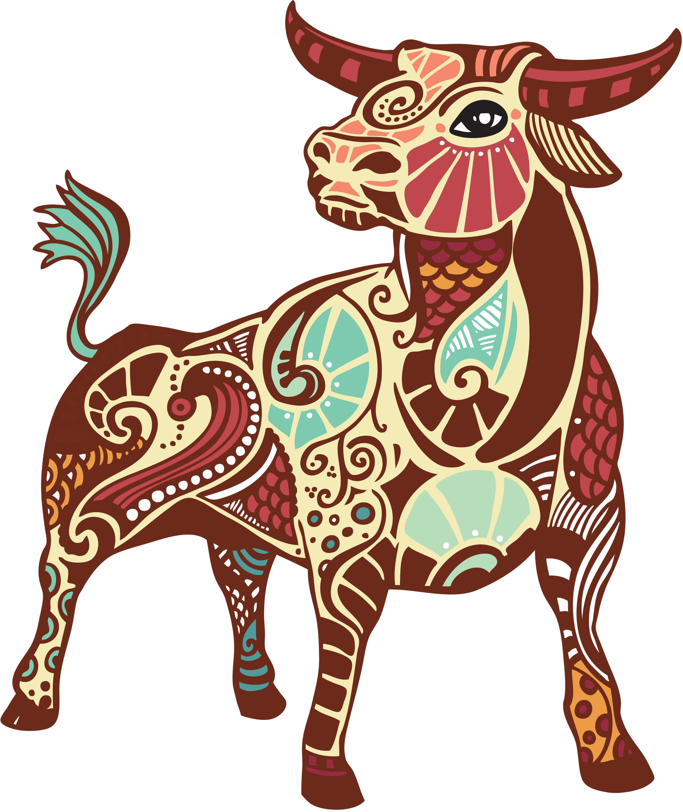
Спокойное начало года может резко сменить настроение на шторм и ураган. Успейте расписать все планы наперед,
ведь вы
едва будете поспевать за всеми возможностями, которыми вас одарит 2020-й год. Все пожелания будут исполняться
словно
по мановению волшебной палочки, но вам важно задать курс вашего самолета правильно. Сверьте все координаты и не
отклоняйтесь с намеченного пути. Период с января по май станет финансово успешным даже без особых потуг с вашей
стороны. Вас одарят не только признанием, но и вниманием. Месяцы будут насыщенными на свидания и самые
откровенные
признания. Тут важно принимать все комплименты с благодарностью, но в то же время быть на чеку, ведь на вас
могут
позариться непорядочные люди. Май подходит для деловых поездок и тихих семейных посиделок у реки за шашлыками.
Июль
подойдет для прогулок на велосипеде и роликах. В августе можно смело уезжать за границу. До сентября важно не
давать
громких обещаний и проще оценивать свои силы. Совет года: не ждите, что будут раскрываться все двери, подбирайте
ключи к закрытым, а другие открывайте сами. Улыбаться, извиняться и кланяться нужно после успеха. Не стойте на
месте. То, кем вы станете в будущем зависит от того, какие усилия вы прикладываете сейчас.
Близнецы (21 мая - 21 июня)
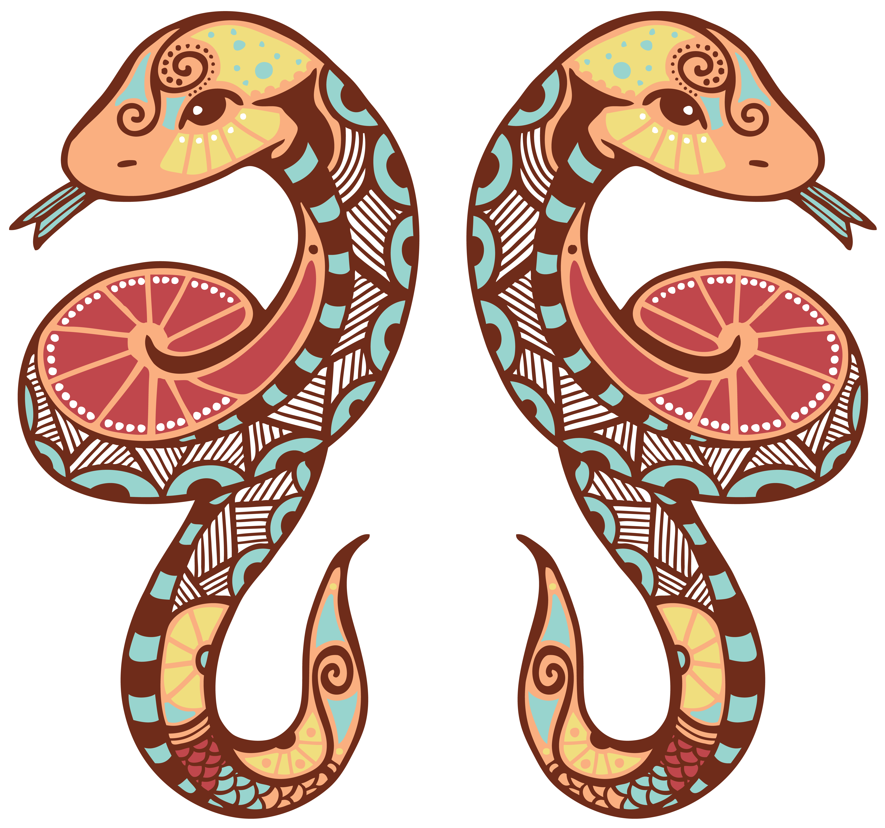
Год приготовил вам эмоции на любой вкус: от веселья и радости до тревог, грусти и даже злости. Не бегите от
ваших
чувств, смело проявляйте эмоции, меняйте обстоятельства вокруг себя в свою пользу. В этом году как никогда стоит
запастись помощью коллег и вместе с ними плыть по благоприятному течению жизни. Так легче и проще, чем грести
против
волн. Январь и февраль потребует надеть бронежилет, чтобы стойко вынести атаки судьбы. С марта начнется хаос и
неразбериха, которые покажутся эпицентром ваших несчастий. Запасайтесь планами и вариантами отступления,
продумывайте тактику на холодную голову, не паникуйте. Все разрешится к сентябрю. С октября вы будете наращивать
ваши силы и мощь и наконец-то займете почетный пьедестал зимой. Передышку лучше взять в апреле, июль проведите
рядом
с домом, а декабрь хорош для путешествий в Англию или Финляндию. Совет года: лучшее время, чтобы сдаться -
никогда!
Вы должны сражаться и быть стойкими, только тогда рядом будет сильный тот, кто протянет с честью, а не жалостью
вам
свою руку помощи. Девиз этого года - общаться и исследовать.
Раки (22 июня - 22 июля)
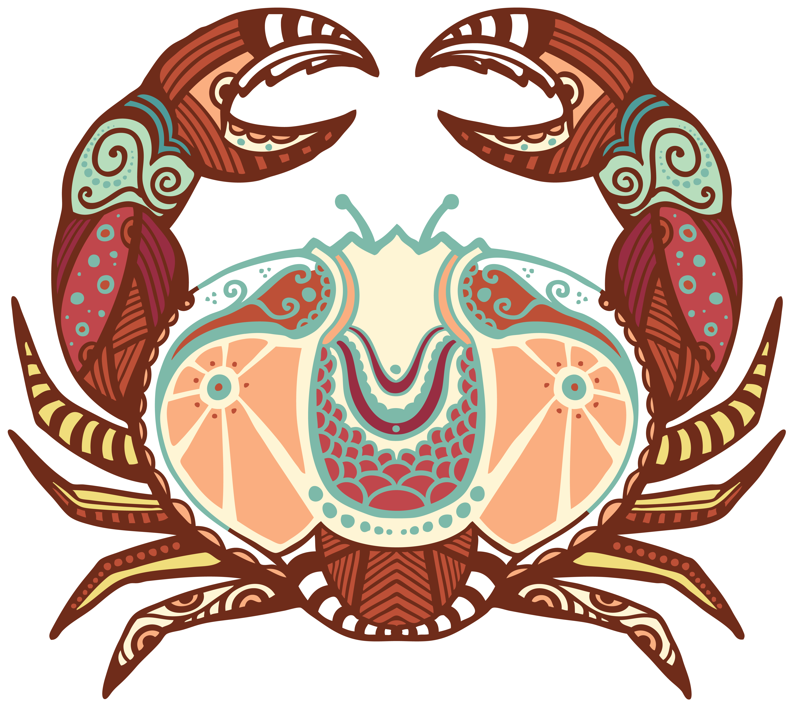
Год будет благоприятным для стрессоустойчивых Раков, которые знают, что счастье и успех приходят к тем, кто
умеет
ждать. Из того, что представители Зодиака не любят, выпадает умение посвящать себя работе и семье в равных
пропорциях. Чуть больше усердия и терпения - и Крыса уже к вам благосклонна. В апреле вам выпадет возможность
отдохнуть несколько недель. С января по август Ракам предстоит трудиться, не покладая рук. До осени срываться с
работы не стоит, потому что можете встретиться с недобросовестными работодателями. Чтобы вас не облапошили,
постарайтесь обдумать ваше финансовое положение до сентября, а уже потом начинать действовать. Совет года:
копите
деньги и инвестируйте в прибыльные проекты. Так вы сможете встретить следующий год, звеня монетами в карманах.
Впрочем, ваше счастье явно не в деньгах, а в людях, с которыми вам предстоит съесть не один пуд соли в 2020
году.
Цените тех, кто рядом с вами.
Львы (23 июля - 23 августа)
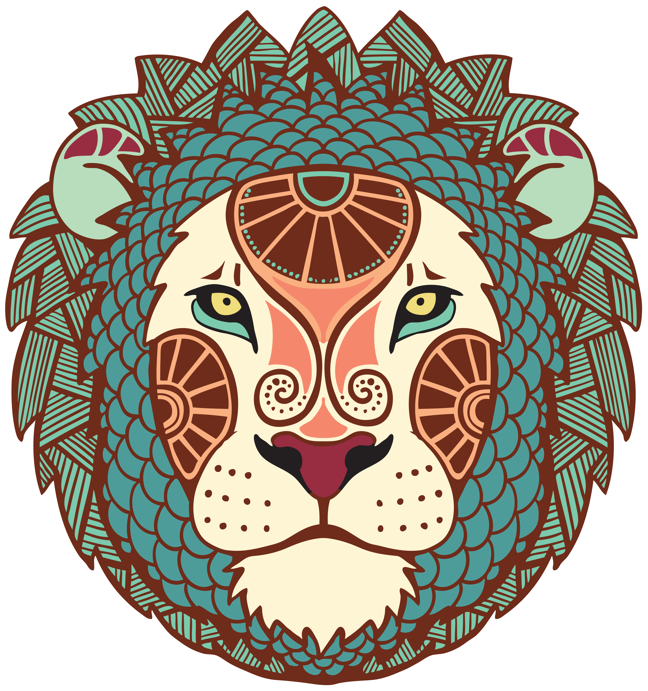
В этом году вам под силу любой проект. Творческого задора хватит на круглый год, если вы не будете раздражаться
по
пустякам. Звездное время для Льва - февраль и март. Всякий раз, решая проблему, закатывайте рукава и усмиряйте
Льва
внутри себя. Чтобы достичь успеха придется приструнить всех ваших демонов. Для этого подойдет июль или август.
Вам
придется проявить мудрость и вновь наступить на горло своей гордости ради достижения успеха. Поэтому
программа-минимум на этот год - не увлекаться сладким, избегать корпоративов с бренди, избегать расстройств и
бессонных ночей и больше отдыхать. Совет года: чтобы не растерять всю удачу, избавляйтесь от привычки смотреть
на
все свысока. Можно на этот год снять вашу корону и оставить ее в укромном месте до лучших времен, когда вас и
впрямь
провозгласят Царем Вселенной. Старайтесь не занимать ни у кого денег и тогда к финишу года вы придете не только
богатым, но и знаменитым.
Девы (24 августа - 23 сентября)
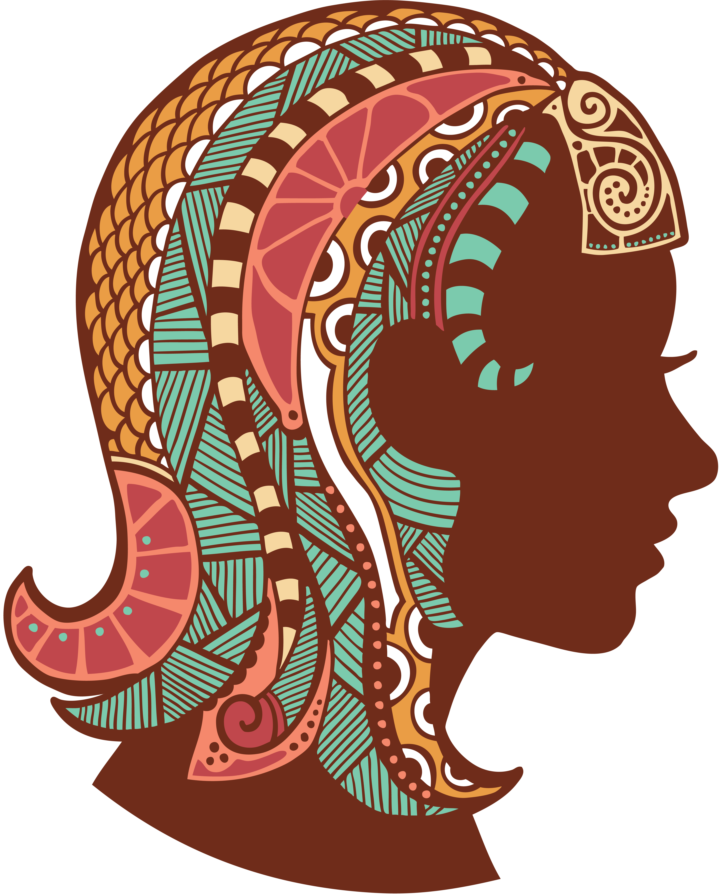
Вы станете настоящим любимчиком Крысы благодаря педантичности, трудолюбию и собранности. Единственное, с чем
придется смириться: выполнять все жизненно важное нужно сразу, не откладывая в долгий ящик. Также важно во главу
угла ставить любимого человека, родителей и детей, а не себя любимого. В январе Дев постигнет разочарование в
работе, появится чувство, что их не ценят, однако настроение сменится уже в апреле, когда вас признают самым
ценным
сотрудником. Это вселит в вас уверенность и заставит отдаваться карьере на все 200%. Но не стоит тянуть чужое
одеяло
на себя, дождитесь времени, когда вам предоставят полную свободу действий. В декабре вас ждет поощрительный приз
от
Крысы. Путешествовать показано каждые выходные в январе. Март подойдет для лыжных покатушек в компании друзей.
Совет
года: Чтобы брать от жизни все, что хочется, нужно вначале определиться со своими желаниями. В этом заключается
все
самое сложное. Впрочем, трудности закаляют, а это самое важное в жизни!
Весы (24 сентября - 23 октября)
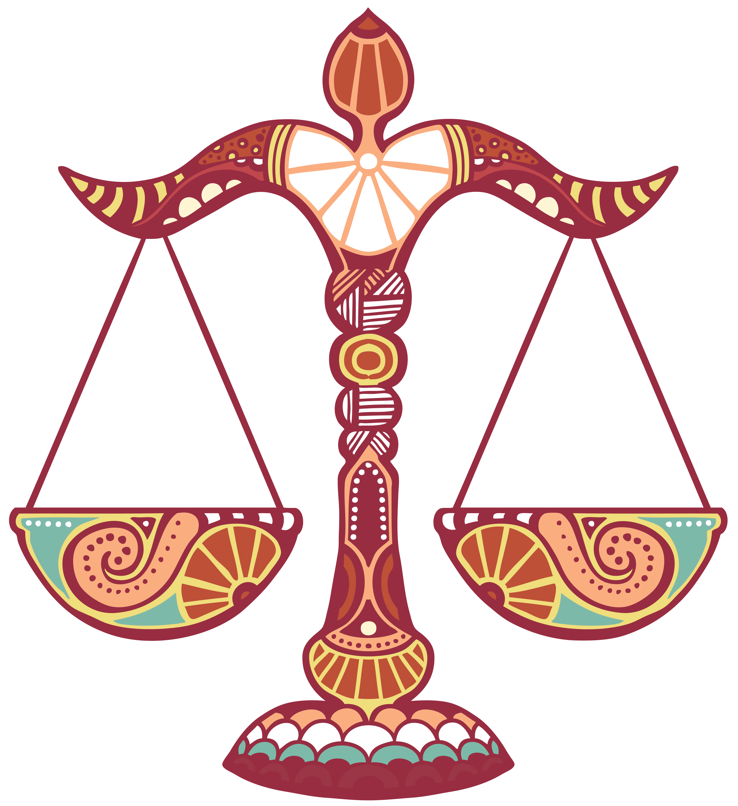
Девиз предстоящего года для Весов - "соглашаясь, вы побеждаете". Ваше желание стать умнее, сильнее и красивее
похвально. Однако успех зависит от правильно расставленных жизненных приоритетов: дом или работа, развлечения
или
работа, благотворительность или деньги. Здесь главное не зациклиться на чем-то одном. Совмещайте в себе все
самое
лучшее, делайте то, что приносит радость и не уходите в себя глубоко и надолго. Весной вас ждет непростой
период,
летом конфликты могут набрать оборотов, если вы не прислушаетесь к себе. Согласитесь, отдыхать в тихой гаване
приятнее, чем все время бороться со штормом и спасаться в мутной воде. С мая по май лучше всего браться за
прокачку
профессиональных умений. С июня по август будет полно деловых встреч и знакомств. Путешествовать и посещать
выставки
лучше в марте, а путешествие лучше всего планировать на бархатный сезон. Совет года: Единственное, что мешает
Весам
стать по-настоящему счастливыми - страх и несвоевременное умение взяться за ум. Как только вы научитесь
рисковать
без расчета на успех, тут же попадете в вихрь прекрасных возможностей.
Скорпион (24 октября - 22 ноября)
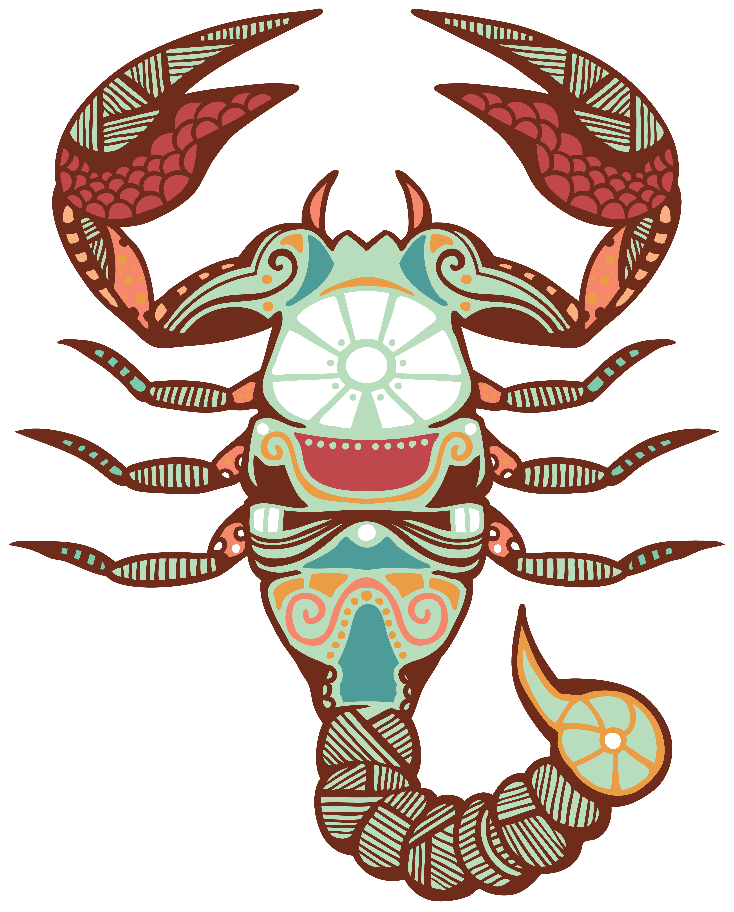
И для чего природа создала Скорпионов такими любителями повредничать? Задумайтесь над своим обычным поведением в
начале года, возможно, вы поймете, что прагматичная Крыса не станет терпеть такое своевольное поведение. В этом
году
вас ждут чувствительные уроки за ваш своенравный и ревнивый нрав. В феврале и марте у вас все еще не отпустит
праздничное настроение. Зато с марта заботы и обязанности приведут вас в чувство. В мае предстоит самый
жароопасный
месяц с накалом страстей, интриг и решением всевозможных проблем. Зато в июне градус напряжения спадет, а ваши
репутация и позиции на работе укрепятся. К следующему году вы получите славный подарочек под елку. Совет года:
чтобы
стать успешным дома и на работе Скорпионам нужно научиться не выпускать свое жало. Иногда для решения проблемы
нужно
рассказать о ней всем в своем окружении. И тогда настоящие друзья помогут выбраться из передряги.
Стрелец (23 ноября - 21 декабря)
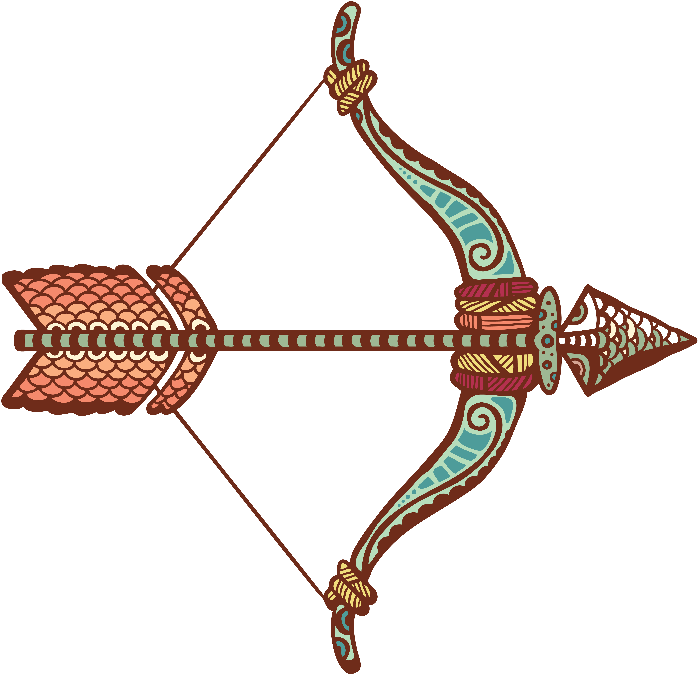
Энергичные и взбалмошные Стрельцы подружатся с Крысой и заключат взаимовыгодную сделку. Пообещав хозяйке года не
срываться то и дело с места и стать чуточку спокойнее, они получат в качестве вознаграждения финансовую
стабильность
и признание в обществе. За напористость и стремление к цели Крыса поможет справится с любой сложностью на пути.
В
2020 году Стрельцы смогут каждый месяц раскрывать в себе новые таланты. В январе и феврале придется справляться
с
постпраздничным авралом. В начале весны вы вновь спасете ситуацию, стиснув зубы. В марте и апреле вам предложат
дополнительный заработок. Справляясь со всеми вопросами вы создадите себе безупречную репутацию, которая стоит
дороже любых денежных благ. Май - прекрасный месяц, когда все нормальные Стрельцы уезжают ближе к морю, чтобы
окунуться в новое и неизведанное. Совет года: если вас ранили, переверните ситуацию с ног на голову на зависть
врагам и себе во благо. Шутите и смейтесь, когда труднее всего. Тогда жизнь не будет казаться такой
беспросветной.
Козерог (22 декабря - 20 января)
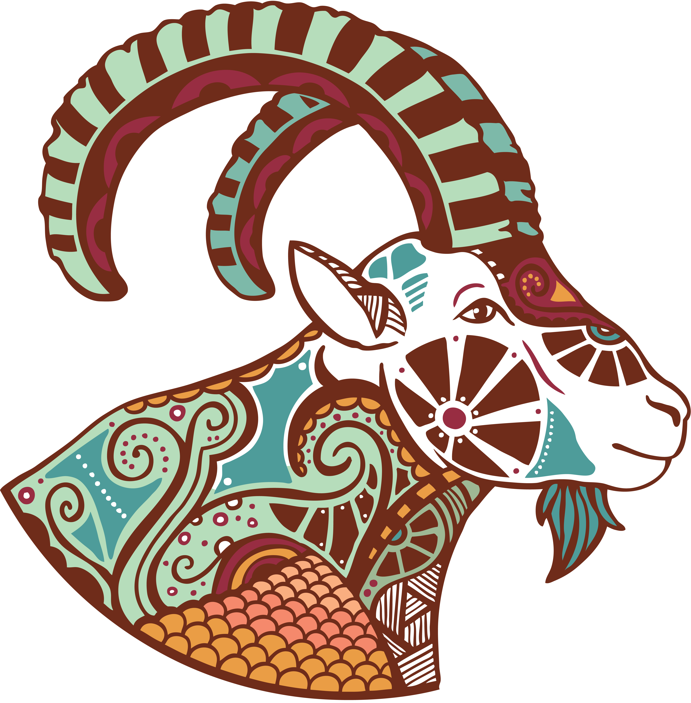
Девиз этого года для Козерогов - и один в поле воин. Взбираясь на вершину Олимпа, вы позабавите Крысу умением
расталкивать своих соперников рогами. Конечно, хозяйка года будет помогать вам тайно. Главное - устоять, когда
противники будут пытаться сбить вас с пути, делая подножки. Вам придется проявить настойчивость с января по
июль,
справляясь с форс-мажорами и находя выход из тупиковых ситуаций. В середине февраля вам захочется немного
отдохнуть
и выпустить пар, зато в августе есть шанс выгодных денежных инвестиций. В октябре можно поправить здоровье на
водах
или грязях. И только в ноябре вы получите стабильный источник дохода. Совет года: Помните, что опыт - сын ошибок
трудных, а всякий, кто взбирается на гору в надежде выделиться из толпы, рискует стать частью этой толпы.
Поэтому
истинным Горцам важно делать добро ради удовольствия, чем для статуса.
Водолей (21 января - 20 февраля)
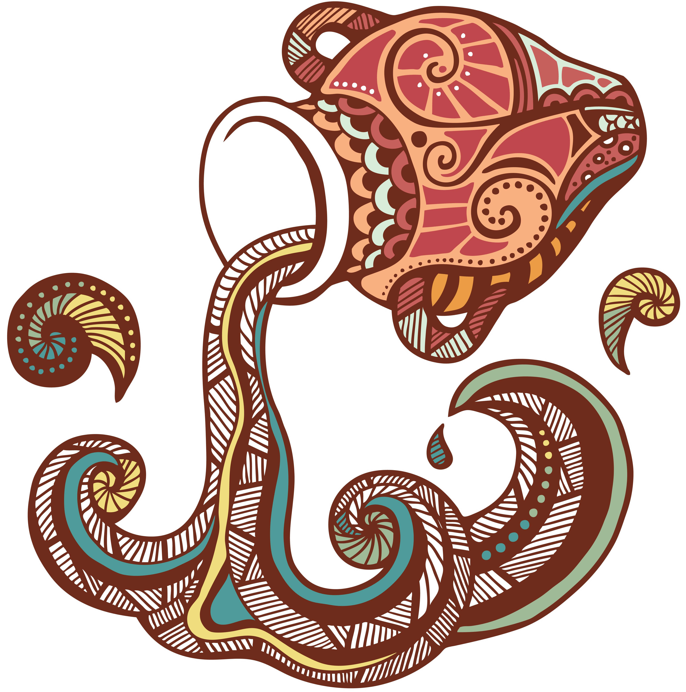
Девиз Водолеев - делать все, чтобы не быть похожими на других! Свободолюбивых Водолеев роднит с Крысой чистый
прагматизм, коммерческая жилка, совесть и подвижный ум. Поэтому хозяйка года легко сделает вас своим союзником.
Однако не стоит забывать, что даже близких друзей Крыса любит всячески испытывать на прочность. И на пути к
успеху
вам предстоит пройти не один километр непонимания, ссор и сомнений. Вам непременно нужно чаще проводить время с
семьей за играми, в путешествиях, в мечтах, за обедами и перед сном. Выкраивайте любую удобную минутку и сможете
стать намного смелее и неуязвимее к следующему декабрю. С января по май Водолеям отдых будет разве что сниться,
зато
время будет благоприятным для покупок, получения призов, налаживания деловых связей. В феврале-марте вам
предстоит
командировка, за которую вы получите дивиденды уже в августе. В ноябре вы будете пожинать сочные финансовые
плоды и
планировать отдых на декабрь. Путешествовать лучше зимой, а отдых под пальмами лучше запланировать на июль.
Совет
года: Путь сквозь тернии к звездам самый сложный. Но зато какой прекрасный дарит опыт и как захватывает сам
процесс!
Главное уметь трудиться и ловить момент.
Рыбы (21 февраля - 20 марта)
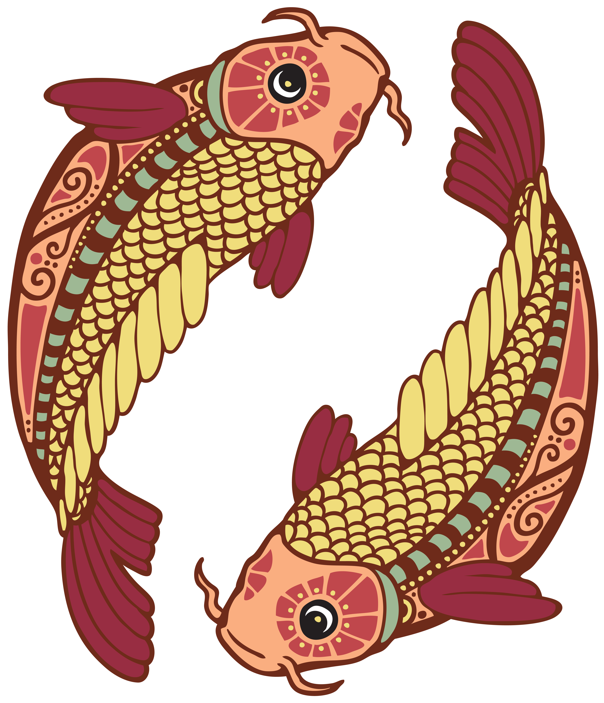
В год Крысы романтичные Рыбы будут чувствовать себя превосходно. Главным девизом года станет известная мудрость:
что
посеешь, то и пожнешь. Год будет удачным как для финансовой, так и любовной сфер. Не стоит долго думать над тем,
за
что вы заслужили столько даров судьбы, смело хватайте удачу за хвост и наслаждайтесь жизнью. Впрочем, в
январе-феврале придется немного раскошелиться на родных и близких. Переживать не стоит, ведь уже в марте все
затраты
вернуться сторицей. Возможно, работа подарит вам встречу с полезным человеком, который предложит выгодный
проект.
Соглашайтесь и не скромничайте. Это ваш шанс и подспорье для продвижения по всем направлениям. В мае будете
пожинать
плоды своего роста. Путешествовать можно в июле, в идеале - к морю или океану. В декабре посвятите отдых горам.
Совет года: все подарки и сюрпризы принимать с радостью и благодарностью, тогда их количество увеличится.